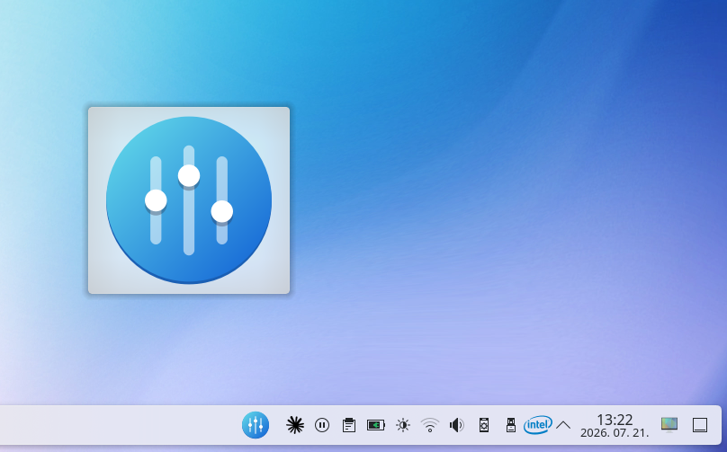
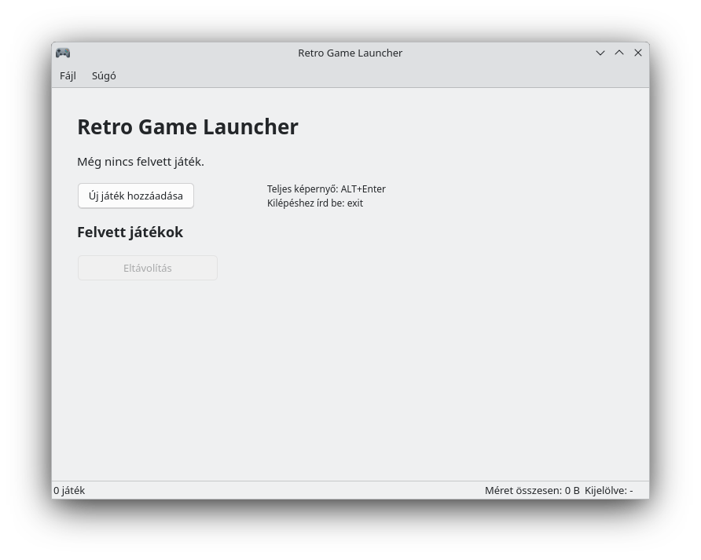

Pénzügyi Napló
Személyes pénzügyi nyilvántartó alkalmazás havi áttekintéssel, tranzakciókezeléssel, statisztikákkal, számlákkal és aranyszámla modullal.
Saját fejlesztésű asztali alkalmazások Linuxra és Windowsra
Pénzügyi nyilvántartás, filmadatbázis és kijelzőprofil-kezelő eszközök, egyszerű telepítéssel, helyi adatkezeléssel és nyílt forráskóddal.
Személyes pénzügyi nyilvántartó alkalmazás havi áttekintéssel, tranzakciókezeléssel, statisztikákkal, számlákkal és aranyszámla modullal.
 Preview
Preview
Offline film- és sorozatadatbázis borítóképekkel, kártyás és listás nézettel, részletes adatlapokkal és helyi adatkezeléssel.
 Stabil
Stabil
Egyszerű kijelzőprofil-kezelő KDE/X11 környezethez, TV, soundbar és külső kijelző profilok gyors váltásához.

StabilKDE Plasma panel-widget az EasyEffects gyors eléréséhez: egy kattintás a megnyitáshoz, jobb klikk a hangprofilok listázásához.

Fejlesztés alattRetro játékok indítója egységes felülettel, memória- és nyelvválasztási beállításokkal.
Windows telepítő, Portable ZIP, Debian DEB csomagok és forráskód külön letöltési oldalon.
Tovább a letöltésekhez »Windows és Linux alatti képernyőképek a programokról, külön alkalmazásonként rendezve.
Képernyőképek megnyitása »Minden projekt forráskódja nyíltan elérhető GitHub-on, hibajelentéseknek és fejlesztőknek.
GitHub megnyitása »